打开本章课件逐页中文翻译：保留原页码、原文与来源，可在学完一节后对照相应页面。
1抓取稳定性的数学：摩擦锥与力闭合
$f_n$ 是压向物体的法向力，$f_t$ 是切向力，$\mu\ge0$ 是静摩擦系数；单向接触只能推不能拉。库仑约束为 $f_n\ge0$、$\|f_t\|\le\mu f_n$。例如 $\mu=0.5$、法向力 10 N 时，切向力幅值上限为 5 N。这是接触点的静摩擦检查。评估完整抓取时，还要检查夹爪最大力和刚体转矩平衡。
力矩相对参考点计算：$\tau=r\times f$。同样大小的力，接触位置不同会产生不同转矩；抓取必须同时检查力与力矩。
第 6 章介绍了 Force Closure（力闭合）与 Form Closure（形闭合）的直觉。这一章把「抓得稳」变成可计算的判据——因为它要用来给十亿条抓取数据打标签。先从物理出发：
1.1 摩擦锥：静摩擦允许的接触力
滑块放在水平面上，静摩擦系数 $\mu$。施加与法线成 $\theta$ 角的力 $F$：切向分量 $F_\parallel = F\sin\theta$ 必须不超过最大静摩擦 $\mu F_\perp = \mu F\cos\theta$，即：
$$ \tan\theta \le \mu \quad \Longleftrightarrow \quad \theta \le \alpha := \arctan\mu $$
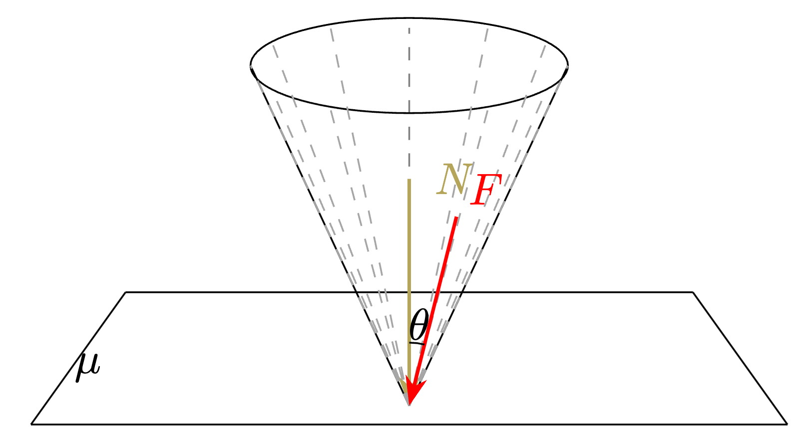
三维中，所有满足条件的力方向构成一个圆锥——轴线为接触点法线、半顶角 $\alpha$。压向接触面、位于摩擦锥内的接触力满足静摩擦约束；边界是临界状态，接触失效、材料变形和动力学扰动仍须另行检查。
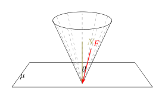
1.2 力旋量与抓取矩阵
作用在刚体上的力既产生平移（力）也产生旋转（力矩）。把两者打包成力旋量（Wrench）：3D 中为 6 维向量 $\mathcal{F} = [f_x, f_y, f_z, \tau_x, \tau_y, \tau_z]^\top$；2D 平面中为 3 维 $[f_x, f_y, \tau_z]^\top$。
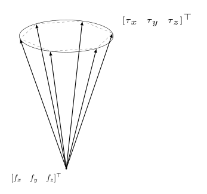
把每个摩擦锥用 $m$ 条边界射线（课程示例取 $m=6$）近似为多面体锥，每条射线的力映射为力旋量。所有接触的射线拼成抓取矩阵 $F \in \mathbb{R}^{n \times j}$；平面刚体 $n=3$，空间刚体 $n=6$，接触数为 C，若每个接触采用 m 条射线则 $j=mC$。下文 k 表示射线组合的系数向量，射线数量则用 j 表示。
1.3 力闭合的充要条件
① $\mathrm{rank}(F) = n$：列向量线性张成整个 $n$ 维力旋量空间，说明可用方向覆盖了全部维度；接着还要检查条件②中的严格正系数；
② 存在 $k \in \mathbb{R}^j$，$k_i \ge \epsilon > 0$，使 $Fk = 0$：存在严格正系数的零合力组合——等价于原点严格位于这些列向量的凸包内部（在满维条件下）。
两个条件的物理含义：① 排除维度不足；①与②联合保证非负接触系数足以覆盖所有力旋量方向；② 的严格正性（$k_i\ge\epsilon>0$）与满秩联合保证原点在列向量凸包的满维内部，而它们生成的凸锥等于整个力旋量空间。若原点仅在凸包边界，则存在某些方向的扰动无法由这些非负射线组合平衡。严格正系数给出离散锥的几何判据。要评估鲁棒余量，还需结合摩擦系数、接触位置和有限夹持力。
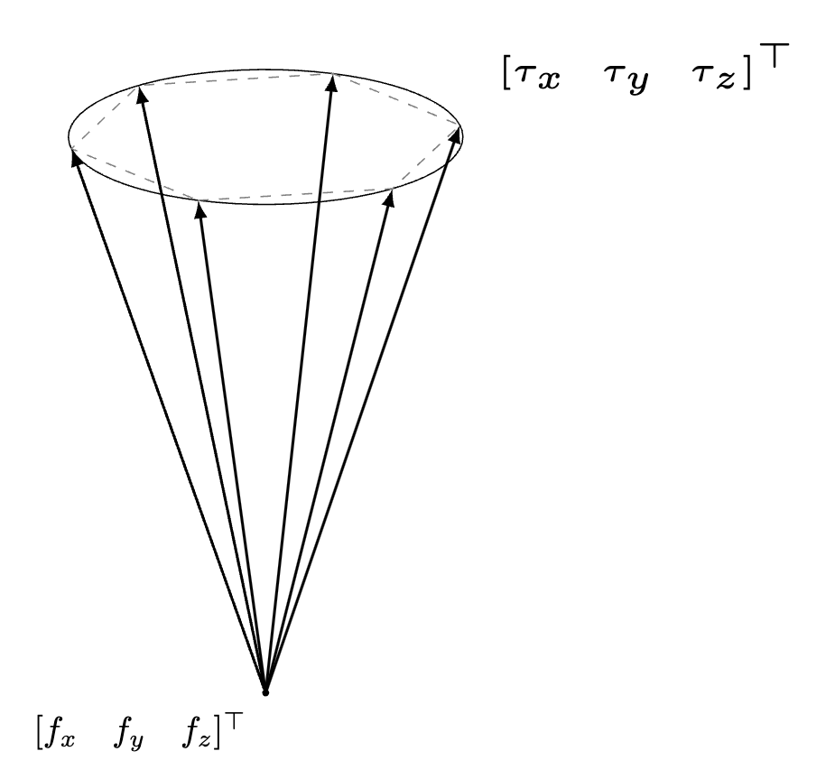
推导假设接触点能施加任意大的力。真实电机的力和力矩有限，因此满足力闭合后，还要检查抵抗外力所需的夹持力是否在电机能力范围内。力闭合检查能否抵抗任意方向的力旋量；给定任务则可以只检查实际载荷。例如，物体可以平稳放在托盘上，即使托盘接触不满足力闭合。任务成功还需载荷、执行器能力、碰撞与运动条件共同满足。
力闭合的两大应用（笔记）：① 合成大规模抓取标注——对采样抓取位姿做力闭合筛选；② 仿真近似——设置六个方向的重力（$x,y,z,-x,-y,-z$）看物体掉不掉出来。这能检验所选方向的稳定性；任意外部力旋量下的力闭合仍需完整判据来验证。
2GraspNet-1B：十亿标注从哪来
数据口径：1Billion 指大量采样抓取的几何标注规模；真实场景观测、物体模型、候选抓取标签和实际执行演示是不同统计单位。一个真实图像可以对应许多抓取标签。
训练抓取检测模型需要海量「（场景，有效抓取）」配对。GraspNet-1Billion（Fang et al., CVPR 2020）结合物体模型、场景观测与抓取标注。下面概括这类流水线，需区分真实相机采集与另行扩展的合成渲染：
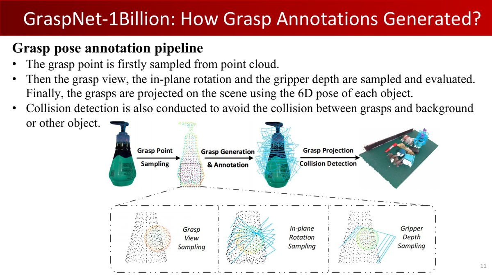
- 获取物体模型：3D 扫描一批真实物体；
- 抓取位姿采样：表面均匀采点（FPS），夹爪中心对准采样点，朝向基于表面法线 + 随机旋转；
- 力闭合筛选：给定 $\mu$（如 0.8），用 §1 的数学判据筛掉不稳定的抓取；
- 场景生成与位姿标注：物体随机摆桌面，标注每个物体的精确 6D 位姿（RGB-D + 模型匹配；纯仿真是另一种数据构造路线）；
- 标签变换与碰撞检测：物体系抓取标签变换到场景系，剔除与场景碰撞的；
- 多视角观测：GraspNet 使用真实相机 RGB-D 数据（官方基线区分 RealSense 与 Kinect）；虚拟相机渲染属于合成数据扩展，不等同于原数据集的采集。
μ 的权衡：标签数量 vs 质量
较低摩擦系数下仍满足力闭合的标签，在该接触模型中要求更严格，但可用标签也更少。选择 $\mu$ 时，要平衡标签数量与筛选严格程度，再通过同一任务的真机评估判断泛化效果。
笔记还点出一个重要演进：GraspNet-1B 依赖扫描物体与真实桌面标注，多样性受限；如今 Objaverse-XL（千万级 3D 模型）等高质量模型库 + 逼真渲染，已能全程序化生成更大更多样的数据集——「合成数据的潜力是巨大的」。
3抓取检测：问题形式化
抓取检测（Grasp Detection）：给定场景表示（点云/RGB-D/体素），输出候选抓取位姿——位置（3 DoF）+ 朝向（3 DoF）+ 夹爪宽度（1 DoF），附带质量分数（课件 p13）。
三种输入模态（课件 p14-16 + 笔记）：
| 模态 | 代表网络 | 特点 |
|---|---|---|
| 体素网格 / TSDF | VGN | 显式几何；受体素分辨率限制 |
| 点云 | GraspNet-baseline（点集骨干）、GS-Net（稀疏卷积骨干） | 显式几何；传感器噪声、深度误差（镜面/透明） |
| 图像 | MonoGraspNet（单目 RGB）、GraspNeRF（多视角） | 隐式几何；特定方法面向透明/镜面物体，效果需评测 |
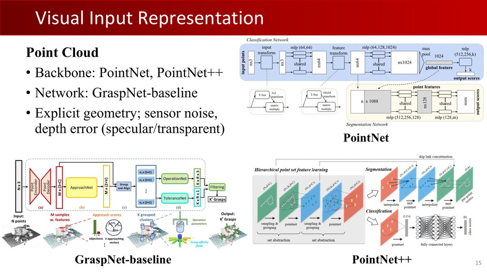
为什么优先考虑几何输入？抓取的物理稳定性取决于局部几何（接触点、法线、曲率），几何是重要因素；材料摩擦、质量分布、柔顺性和任务也会影响稳定性，颜色纹理可间接提示材料——直接给几何信息更直接高效（笔记）。老师的「Partial/Complete」观点也值得记住：想建模完整三维场景需要多视角数据，单视角会有遮挡缺失。
评估指标（课件 p17）：成功率（成功/总尝试）、清理率（移除物体数/总物体数）、规划时间（输入到返回抓取）。任务特点：Object Agnostic（不区分身份，好抓的先抓）+ Non-Task-Oriented（不关心抓来干嘛）。
4VGN：体素路线
VGN（Volumetric Grasping Network, CoRL 2020）直接在三维体素空间预测抓取（课件 p18-24）：
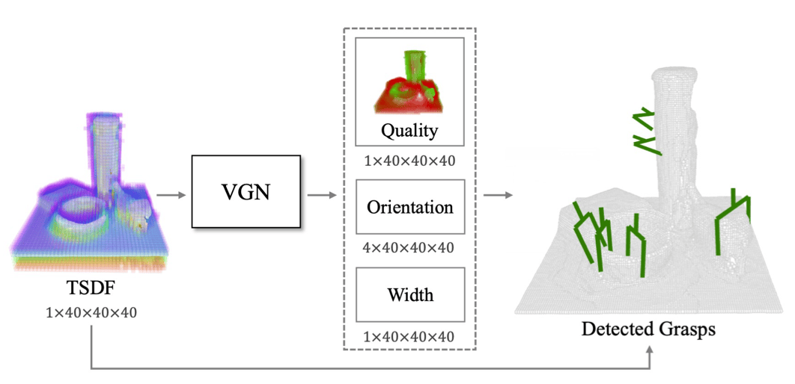
- 输入：多视角深度图融合的 TSDF（截断符号距离场——每个体素存到最近表面的有符号距离，正值在外、负值在内）；
- 网络：3D 全卷积编码器-解码器（U-Net 风格）；
- 输出：三个网格：抓取质量（该体素处的质量预测，若要解释为真机成功概率，需要先做校准）、抓取朝向（四元数）、抓取宽度。
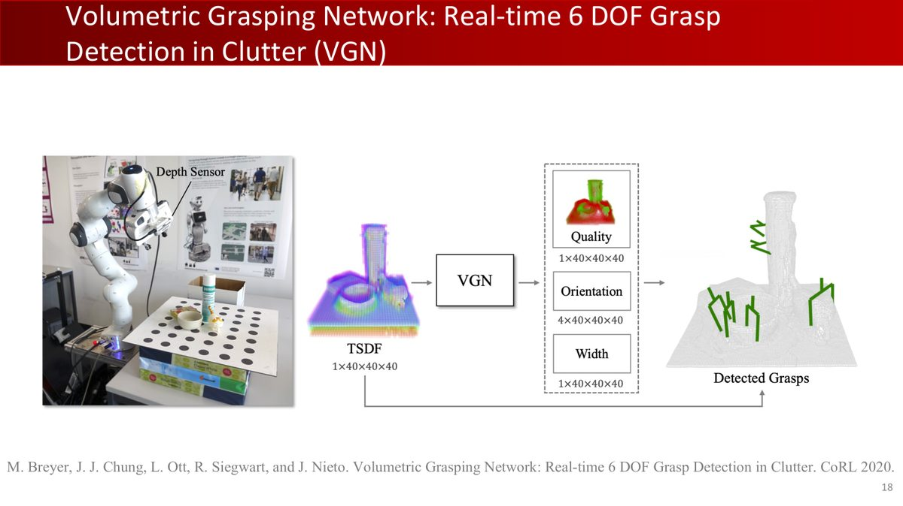
笔记介绍了一个工程技巧：预测宽度主要用于减少夹爪张开过宽造成的碰撞。某些夹爪实现采用闭合控制；实际停止条件须由控制模式、力限位与物体安全要求确定。
后处理三件套
- 高斯平滑：平滑预测质量、偏好连片高分区域；这是一种局部平滑假设，附近点仍可能因碰撞而不可抓；
- 距离掩膜：依据TSDF表面距离与手指深入距离筛选体素；原课件作了简写，具体符号与阈值以原实现为准；
- NMS：按质量分数去冗余。但老师指出：质量、朝向和宽度需要一起检查。「即使前面这个准了后面不准也没用」。
VGN 的仿真到真实迁移：差距来自哪些因素？
VGN 用大量合成数据训练、真机表现良好，关键在依赖几何表征——不看颜色纹理，只看形状。TSDF 在厘米级体素下对毫米级深度噪声不敏感（小的凹凸被体素化平滑掉）。课程还指出：某些夹爪抓取实验中，真机成功率可能高于对应仿真——
- 真实夹爪闭合时持续施力，会轻微移动/压紧物体、使软物体形变——更稳固的接触，仿真里没模拟这些「有利」效应；
- 指尖橡胶垫可改变摩擦与柔顺接触，但也改变标定条件，应验证材料、磨损和目标物体上的效果；
- 仿真自身缺陷（碰撞检测不准、物理不稳定）反而可能让仿真抓不住、现实抓得住。
仿真结果帮助定位问题，真机实验则检验方法在实际接触条件下的表现。
VGN 的局限：多视角依赖（严重遮挡场景需要多视角建完整 TSDF）；精度受体素大小限制（若位置只选体素中心，每轴量化误差可达半个体素；实际误差还包括观测、预测和执行误差）；提高分辨率则内存/计算三次方增长。
5GraspNet / GS-Net：点云路线
点云对比体素：轻量（只表示表面，几万点与稠密三维网格的对比示例，实际数量依表示配置而定）、高分辨率（坐标连续值）。GraspNet-baseline与GS-Net 都利用参数分解；课件 p25—38 展示的是 GS-Net 管线：
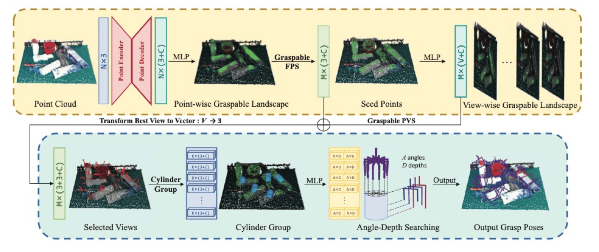
| 阶段 | 做什么 | 覆盖的自由度 |
|---|---|---|
| 接触点选择 | 预测每点的 graspness 分数，取高分点 | 2 DoF（表面） |
| 接近方向 | 在离散接近方向集合中预测分数并选择方向（数量按具体方法配置） | 2 DoF（轴向） |
| 绕轴旋转 + 深入 | Cylinder Grouping 聚合局部特征预测 | 1 DoF（角度）+ 1 DoF（深度） |
GS-Net（ICCV 2021）把这个框架系统化，提出 graspness——基于力分析模型的「可抓取性」度量，两阶段设计（Where / How）：
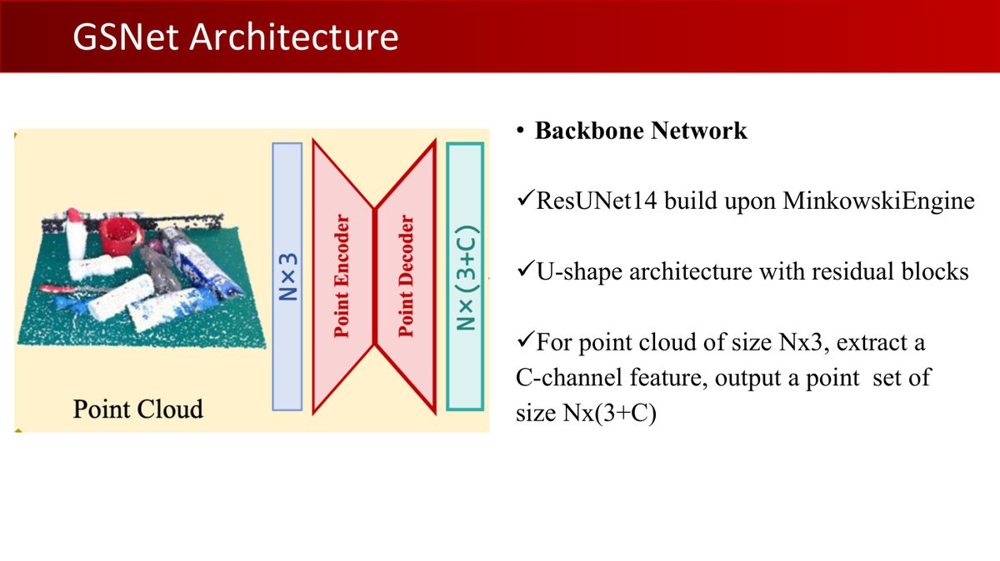
- 稀疏卷积：3D 点云体素化后大部分体素是空的——只在非空处计算卷积（MinkowskiEngine）；
- 可抓取 FPS：MLP 输出 graspable landscape，选 graspness 超阈值的点做最远点采样；
- 视图选择：Fibonacci 球面采样 V 个视图，输出 view-wise graspness；
- Cylinder Grouping：以「点-方向」对为中心取圆柱区域，聚合局部点特征；
- 抓取生成：MLP + max-pooling，输出不同（平面旋转角 × 深入深度）组合的分数与宽度。
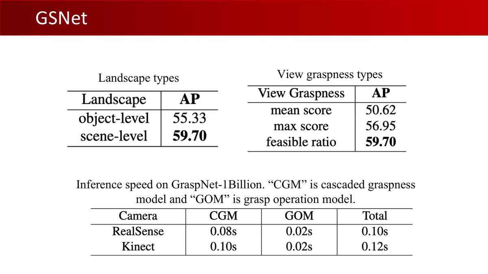
点云抓取方法的归纳偏置：局部性与平移关系
① 局部性：Cylinder Grouping 只依赖候选点周围的局部几何，以局部几何为主要特征；最终还须检测远处障碍对手臂和夹爪的影响；
② 平移等变性：相对坐标帮助复用平移后的局部几何模式，但具体网络是否严格平移等变须看其坐标编码与实现。
模型学习的是「局部几何特征与抓取成功的关系」：一对平行小平面、一个合适的边缘或角落，在不同物体上可能提示可行抓取，但仍须核对尺度、摩擦与载荷。在数百个物体上学习多样的局部几何模式，有助于泛化到未见物体。评估新物体时，还要覆盖遮挡、尺度、材料和场景变化。
6条件生成模型：灵巧手抓取
VGN 与 GraspNet 本质都是检测——输出有限个离散候选 + NMS。但理论上物体有无限多种抓法，检测式方法只能给有限几个解。对 20+ DoF 的灵巧手，抓取空间巨大，采样+评估或检测都很困难，可以用生成模型表达多种可行抓取（课件 p39-50）：
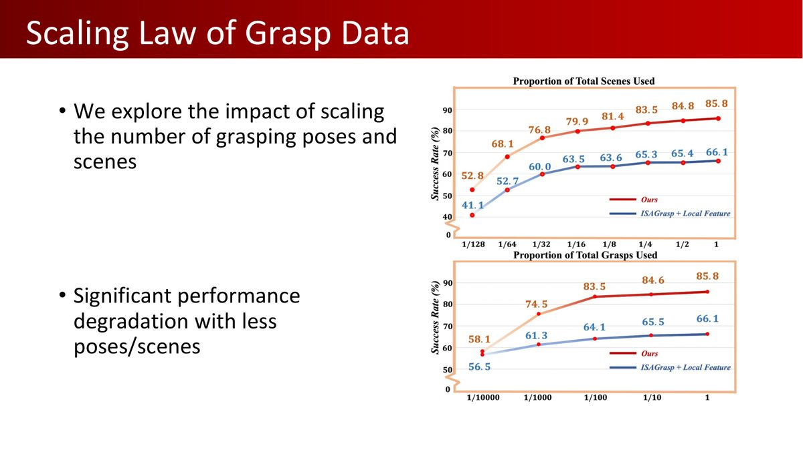
课件方法（两阶段）：
- Where to grasp：稀疏卷积提取局部特征，预测objectness（是否物体上的点）与graspness（是否适合做种子点）；
- How to grasp：对种子点的手腕 6D 位姿 $(T, R)$ 用扩散模型生成（处理多峰分布），手指关节角 $\theta$ 直接回归。
数据来自 DexGraspNet 2.0（课件时 in submission）：7500 个合成训练场景 + 670 测试场景的大规模杂乱灵巧抓取基准。原实验显示灵巧手对较大物体有更强的包裹能力；相应平行夹爪评测中与 GS-Net 表现接近。这些结论限定该论文的物体集、输入和协议。
检测方法从观测中挑选候选抓取，生成方法表达多个可行抓取；两者都需要检查几何可达性、碰撞和接触条件。比较成功率时，先对齐物体集合、观测条件、成功判定与试验次数。
7前沿：透明物体与深度难题
课件最后展示了课程组的两个前沿工作，主题都是同一个：深度传感器对镜面/透明物体失效（课件 p51-68）：
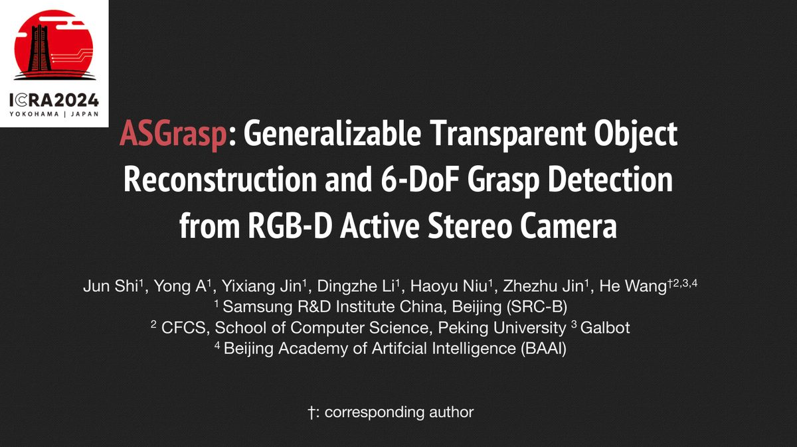
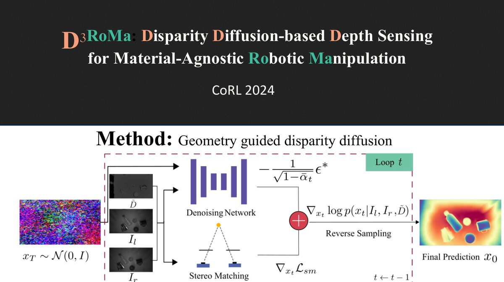
- ASGrasp：主动立体相机 + 相关金字塔，输出两层深度图（可见点云 + 不可见点云），实现透明物体重建与 6-DoF 抓取检测，原课件报告其特定真机实验中成功率超过 95%；阅读这一数值时，应同时查看实验中的物体与场景范围；
- D³RoMa（Disparity Diffusion-based Depth Sensing, CoRL 2024）：几何引导的视差扩散模型，估计左右图像视差并转为深度，改善困难材料上的几何感知，支持材料无关的机器人操作；它是深度感知方法，与闭环策略学习的作用层次不同。
抓取检测（VGN/GraspNet）解决的是「哪里能抓」——它可作为视觉—语言—动作模型（VLA）的几何技能或数据构造模块：GraspVLA 的合成数据管线（对跖抓取合成）会利用与本章 §1-2 相联系的接触可行性与力闭合知识；而第 8-9 章的策略学习将把「抓」扩展为「连续的动作序列」。
8本章小结
| 核心概念 | 一句话解释 |
|---|---|
| 摩擦锥 | 法线 ± $\arctan\mu$ 的锥；锥内压缩接触力满足库仑静摩擦约束 |
| 力闭合判据 | $\mathrm{rank}(F)=n$ 且存在严格正系数零组合（原点在射线力旋量凸包的满维内部） |
| GraspNet-1B | 采样→力闭合筛选→场景→碰撞检测→真实多视角观测与几何抓取标注的流水线；十亿级规模统计的是抓取标签；真机演示按实际执行次数另行统计 |
| VGN | TSDF 体素 + 3D U-Net，三输出（质量/朝向/宽度）；位置预测受体素离散化影响 |
| GS-Net | graspness 两阶段 + Cylinder Grouping；局部几何与相对坐标有助于泛化；严格等变性取决于实现 |
| 抓取 Sim2Real | 几何输入缓解部分外观差异；接触与物理建模差异会改变迁移效果 |
| 条件生成 | 扩散模型处理多峰抓取分布，灵巧抓取的一条生成建模路线 |
第 8 章进入「策略学习」板块：模仿学习与行为克隆——从单次抓取位姿进一步学习连续动作，理解策略如何根据反馈作出下一步决策。
9动手实践
本章没有原版作业，但两个练习能让你亲手触摸「平移力平衡筛选」和「局部平面性采样」——GraspNet-1B 流水线中的部分几何概念。
练习 1：摩擦锥筛选器（20 分钟）
仅判断二维平移力能否平衡，不含转矩；完整平面刚体力闭合还需接触位置构造三维 wrench。下面用摩擦锥边界力做这个简化检查：
import numpy as np
def friction_cone_check(normals, mu=0.8):
"""判断一组接触法向的摩擦锥能否平衡任意二维平移力；忽略力矩。
normals: (C,2) 接触点法向。每根法线张成的锥 = 法线 ± arctan(mu) 的扇形。"""
alpha = np.arctan(mu)
C = normals.shape[0]
wrenches = []
for n in normals:
n = n / np.linalg.norm(n)
# 锥的两个边界方向（2D 中锥退化为扇形）
R = np.array([[np.cos(alpha), -np.sin(alpha)], [np.sin(alpha), np.cos(alpha)]])
wrenches.append(R @ n); wrenches.append(R.T @ n)
F = np.column_stack(wrenches) # (2,2C) 平移力方向矩阵；不含力矩
rank_ok = np.linalg.matrix_rank(F) == 2
# 条件2：严格正系数零组合 ⟺ 原点在凸包内部（用线性规划或采样判定）
from scipy.spatial import ConvexHull
pts = F.T
if np.linalg.matrix_rank(pts - pts.mean(0)) < 2:
return False
hull = ConvexHull(pts)
interior = bool(np.all(hull.equations[:, -1] < -1e-10))
return rank_ok and interior
# 测试：对称的两根法线（左右夹）在 mu>0 时可平衡二维平移力
print(friction_cone_check(np.array([[1.,0],[-1,0]]))) # True
print(friction_cone_check(np.array([[1.,0],[0.7,0.7]]))) # False（同侧）练习 2：简化 graspness 采样器（25 分钟）
对任意点云，用「局部平面性」启发式体验几何候选点评分；完整的可抓取性判断还需加入夹爪碰撞与接触稳定性检查：
def graspness_heuristic(pts, k=20, r=0.03):
"""对每个点，找 r 邻域内的点做 PCA：最小特征值对应法线方向；
邻域越扁平，平面性分数越高；这不是完整 graspness，也不包含夹爪碰撞和接触稳定性。返回 (N,) 分数。"""
from scipy.spatial import cKDTree
tree = cKDTree(pts)
scores = np.zeros(len(pts))
for i, p in enumerate(pts):
idx = tree.query_ball_point(p, r)
if len(idx) < 8: continue
nb = pts[idx] - p
# PCA：协方差特征值 λ1≥λ2≥λ3；扁平 ⟺ λ3 远小于 λ1+λ2
lambdas = np.linalg.eigvalsh(nb.T @ nb / len(nb))[::-1]
flatness = 1 - lambdas[2] / (lambdas[0] + lambdas[1] + 1e-9)
scores[i] = flatness
return np.clip(scores, 0, 1)
# 相同点数和表面积量级的球面 / 平面表面采样；固定邻域半径
np.random.seed(42)
pts_sphere = np.random.randn(2000, 3)
pts_sphere *= 0.1 / np.linalg.norm(pts_sphere, axis=1, keepdims=True)
span = 0.1 * np.sqrt(np.pi)
pts_plane = np.column_stack([np.random.uniform(-span, span, (2000, 2)), np.zeros(2000)])
print("球面局部平面性均值:", np.round(graspness_heuristic(pts_sphere).mean(), 4))
print("平面局部平面性均值:", np.round(graspness_heuristic(pts_plane).mean(), 4))进阶（选做）：跑通开源 GraspNet
官方代码 graspnet-baseline（GitHub：graspnet/graspnet-baseline）支持在 GraspNet-1B 数据集上训练与真机 demo；如需 GPU 轻量方案，可先跑 VGN 的 PyTorch 实现（ethz-asl/vgn）体验体素路线。两者都有预训练权重。
两个练习约 45 分钟（练习 1 需 scipy）。做完后你对「力闭合筛选 + 几何可抓取性」有了第一手代码，读 GraspNet-1B 的标注代码会更容易理解。若对扩散模型生成抓取感兴趣，第 9 章强化学习后可以读 GraspLDP 论文作延伸。
理解检查
给定 μ=0.5、法向力 10 N，切向力 6 N 是否可由静摩擦支持？（不能，上限 5 N。）两个方向相反的接触力能平衡平移，就一定能平衡全部转矩吗？（不能，须加入接触位置与力矩。）GraspNet 的十亿标签是否等于十亿次真机抓取？（不是。）
先遮住括号中的答案，用本章符号和一个具体例子说明理由。遇到疑问时，对照相应节的模型假设检查自己的推理。
附A术语表
| 术语 | 解释 |
|---|---|
| 摩擦锥（Friction Cone） | 接触点可行力方向构成的锥，半顶角 $\arctan\mu$ |
| 自锁（Self-locking） | 特定几何与摩擦条件下外载荷不能驱动相对滑动；须声明接触和载荷假设 |
| 力旋量（Wrench） | 力 + 力矩拼成的向量（2D 为 3 维，3D 为 6 维） |
| 抓取矩阵 F | 所有接触点摩擦锥近似力旋量拼成的矩阵 |
| 力闭合判据 | $\mathrm{rank}(F)=n$ + 严格正系数零组合（原点在射线力旋量凸包的满维内部） |
| TSDF | 截断符号距离场：体素存到最近表面的截断有符号距离 |
| graspness | 基于力分析的几何可抓取性度量（GS-Net 提出） |
| Cylinder Grouping | 沿接近方向的圆柱区域聚合局部点特征 |
| 稀疏卷积 | 只在非空体素上计算卷积（MinkowskiEngine） |
| Object Agnostic | 抓取不区分物体身份，好抓的先抓 |
| 抓取检测 vs 生成 | 有限离散候选 + NMS / 学习分布并采样（多峰） |
| DexGraspNet | 灵巧手抓取数据集系列（2.0 大规模杂乱基准） |
| 对跖抓取（Antipodal Grasp） | 两个接触点法线反向对置的经典稳定抓取模式 |
附B课件 69 页完整索引
原版 Lecture 7 课件共 69 页（GitHub 原文件）。下表逐页列出内容及在本教程中的位置：
| 页码 | 页面内容 | 在教程中的位置 |
|---|---|---|
| p1 | 封面：Lecture 7 - Vision and Grasping III | 封面区 |
| p2 | 主题页：抓取数据合成 | §2 开头 |
| p3 | 抓取位姿与力闭合（回顾） | §1（回顾第 6 章） |
| p4 | 物理定义：力旋量锥正张成 vs 刚性固定 | §1.3 |
| p5 | 2D 简化力闭合例子（附视频） | §1（回顾第 6 章） |
| p6 | 数据集路线：标注真实数据 / 合成数据 + 力闭合标签 | §2 |
| p7 | 物体数据集：ShapeNet、ModelNet（无抓取标注） | §2 |
| p8 | Objaverse-XL：1000 万+ 3D 物体 | §2（笔记呼应） |
| p9 | ACRONYM（ICRA 2021）：仿真大规模抓取数据集 | §2 |
| p10 | GraspNet-1Billion（CVPR 2020） | §2 |
| p11 | GraspNet-1B 标注流水线（点采样→视角→旋转→深度→投影） | §2 |
| p12 | 主题页：抓取检测 | §3 开头 |
| p13 | 多峰分布 → 形式化为检测问题 | §3 |
| p14 | 体素网格输入（VGN；显式几何，受分辨率限制） | §3 |
| p15 | 点云输入（PointNet/PointNet++、GraspNet-baseline） | §3 |
| p16 | 图像输入（MonoGraspNet、GraspNeRF 透明物体） | §3 |
| p17 | 评估指标：成功率、清理率、规划时间 | §3 |
| p18 | VGN（CoRL 2020）介绍 | §4 |
| p19 | 抓取定义：位置/朝向（四元数）/宽度 + 质量分数 | §4 |
| p20 | VGN 网络：TSDF 输入、三输出、3D FCN | §4 |
| p21 | VGN 后处理：高斯平滑、距离掩膜、NMS | §4 |
| p22 | VGN 合成数据：PyBullet「pile / packed」场景 | §4 |
| p23 | VGN 真机 demo | §4 |
| p24 | VGN 局限：多视角、体素分辨率 | §4 |
| p25 | GS-Net（ICCV 2021）：杂波中 graspness 发现 | §5 |
| p26 | 两阶段：Where（可抓取位置）+ How（抓取参数） | §5 |
| p27 | graspness 定义：点级与视图级 | §5 |
| p28 | graspness 度量：力分析模型质量分（单物体） | §5 |
| p29 | 场景级 graspness：碰撞检查 + 位姿投影 | §5 |
| p30 | GS-Net 架构：MinkowskiEngine ResUNet14 | §5 |
| p31 | 稀疏卷积：只在非空体素计算 | §5 |
| p32 | 可抓取 FPS：graspable landscape + objectness | §5 |
| p33 | 视图选择：Fibonacci 球面采样 + 概率化选择 | §5 |
| p34 | Cylinder Grouping：圆柱区域采样 K 点 | §5 |
| p35 | 抓取生成：MLP 输出（旋转-深度）组合分数与宽度 | §5 |
| p36 | GS-Net 定性结果与真机实验 | §5 |
| p37 | landscape 类型与推理速度对比（CGM/GOM） | §5 |
| p38 | GS-Net 总结 | §5 |
| p39 | 主题页：条件抓取生成模型 | §6 开头 |
| p40 | 数据：DexGraspNet 2.0（in submission） | §6 |
| p41 | 扩散式灵巧手位姿生成 | §6 |
| p42 | 方法 Stage 1：Where to grasp（objectness + graspness） | §6 |
| p43 | 方法 Stage 2：扩散模型生成 T、R，回归 θ | §6 |
| p44 | 灵巧抓取位姿扩散模型（总览） | §6 |
| p45 | DexGraspNet 2.0 上 SOTA | §6 |
| p46 | 抓取数据 Scaling Law | §6 |
| p47 | 跨形态迁移：平行夹爪上性能与 GSNet 相当 | §6 |
| p48-49 | 真机实验：灵巧手包裹能力对比 | §6 |
| p50 | 总结：大规模基准 + 端到端生成管线 | §6 |
| p51 | 主题：GraspNet 的泛化性（Fang et al. 引用） | §5（局部泛化） |
| p52 | 深度传感问题：镜面（RGB/深度/点云对比） | §7 开头 |
| p53-54 | Demo：GraspNet-baseline 裸用 vs 精修点云对比 | §7 |
| p55 | 数据生成（STD-GraspNet） | §7 |
| p56-60 | DREDS 域随机化：布局/材质（BSDF）/背景/光照/视角 | §7（域随机化） |
| p61 | ASGrasp：透明物体重建与抓取（>95% 成功率） | §7 |
| p62 | ASGrasp 管线：相关金字塔 + 双层深度图 | §7 |
| p63 | 全球首个材料无关抓取（>95%） | §7 |
| p64-65 | （无文字配图页） | §7 |
| p66 | D³RoMa（CoRL 2024）：视差扩散深度感知 | §7 |
| p67 | Sim2Real 实验 | §7 |
| p68 | 结果可视化 | §7 |
| p69 | 结尾页：下集预告 Vision and Grasping III（Policy Learning 即将开始） | 页脚（下一章预告） |
附C参考资源
- 课程官网：pku-epic.github.io/Intro2EAI_2025
- 本教程素材来源仓库：zhuozhiyongde/Embodied-Artificial-Intelligence-2025Spring-PKU
- 本章课件：
Slides/Lecture07_03_31.pdf（69 页） - 本章笔记原文：
Notes/07-Vision-and-Grasping-III.md
延伸阅读
- Fang et al., GraspNet-1Billion, CVPR 2020：十亿抓取数据集
- Breyer et al., VGN, CoRL 2020：体素抓取网络
- Wang et al., Graspness Discovery in Clutters (GS-Net), ICCV 2021
- GraspVLA（arXiv 2505.03233）：十亿级合成数据预训练的抓取基础模型
- 扩散模型入门：Hammour Yue《概率视角下的生成模型》（知乎）、DDIM 原理推导（知乎）